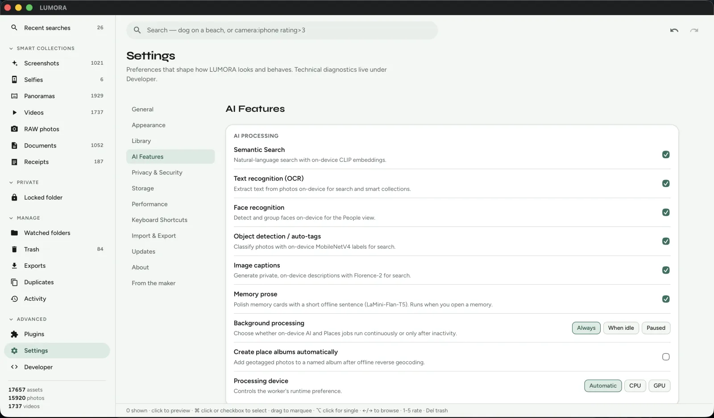

Immich alternative
AI photo search without running a server
Immich is excellent if you want a self-hosted Google Photos stack. LUMORA is for people who want the same search energy on a single desktop — no Docker, no always-on NAS.

- Desktop-nativeTauri app for Mac, Windows, and Linux — install and point at folders.
- No self-hostingSkip reverse proxies, backups of a photo server, and mobile companion setup.
- Same privacy classPhotos stay local; optional models run on-device.
- PluginsExtend workflows with sandboxed JavaScript instead of server jobs.
Your memories. Your machine.
Open-source local-first photo library — no subscription, no cloud lock-in.